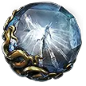
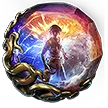
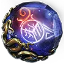
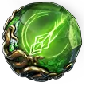
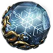
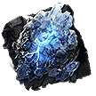
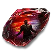
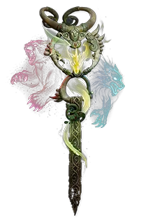
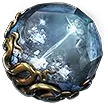

⚡ Twister Spirit Walker — อัปเดต Endgame
หมายเหตุ: นี่คือคำแปลแบบเรียบเรียงให้อ่านง่าย (ไม่ใช่คำต่อคำ) เนื้อหาครบตามคลิป · ชื่อสกิล/ไอเทมคงภาษาอังกฤษไว้ พร้อมชื่อไทยจากเกม และรูปไอคอนจากฐานข้อมูล poe2db ของเรา
🗂️ ไอคอนสกิล/ไอเทมหลักที่พูดถึง
ขอบสี: ฟ้า = Spirit gem · ส้ม = Unique item · ทอง = Support · เทา = Skill

ศรน้ำแข็งIce Shot
พลังไตรธาตุTrinity ระบำวิญญาณGhost Dance
ระบำวิญญาณGhost Dance ลมร่ายรำWind Dancer
ลมร่ายรำWind Dancer สาสน์สายฟ้าHerald of Thunder
สาสน์สายฟ้าHerald of Thunder สาสน์น้ำแข็งHerald of Ice
สาสน์น้ำแข็งHerald of Ice
แพ้ธาตุElemental Weakness
คำแช่งนักซุ่มยิงSniper's Mark
คำแช่งแช่แข็งFreezing Mark
Olroth's ConvictionSupport
Exposing CrySupport
Forgotten WardenBody Armour (เลิกใช้) Sacred FlameSceptre
Sacred FlameSceptre Heart of the WellJewel
Heart of the WellJewel From NothingJewel (เลิกใช้)
From NothingJewel (เลิกใช้)🎬 เกริ่นนำ (Intro)
สวัสดีทุกคน ผมชื่อ Sides วันนี้มาพร้อมอัปเดต endgame สำหรับบิลด์ Twister Spirit Walker ของเรา ตอนนี้เราทำดาเมจได้ เกิน 16 ล้าน ด้วย Twister — ละลายบอส Pinnacle ที่จัดเต็มสุดได้ภายในไม่กี่วินาที
นอกจากนี้เรายังปรับ ชั้นการป้องกัน (defensive layers) ครั้งใหญ่ ให้มีโอกาส หลบ (Evade) และ ปัดป้อง (Deflect) สูงขึ้นมาก เล่นแมพ T15/T16 แบบ juiced + delirious ได้สบายขึ้นเยอะ และตอนนี้เราเล่นเข้าหา Frenzy Charge มากขึ้น ซึ่งช่วยเพิ่มดาเมจและช่วยตอนเคลียร์แมพ (ยิงกระสุนออกได้เยอะขึ้นมาก)
ถ้าชอบคลิปไกด์นี้ ฝากกด Like + Subscribe ช่วยช่องด้วยนะครับ และตอนนี้มีไลฟ์สดทั้ง YouTube และ Twitch ลิงก์อยู่ใน description/คอมเมนต์
🛡️ การเปลี่ยนอุปกรณ์ครั้งใหญ่ (Major Gear Changes)
ถุงมือ (Gloves) — เลิก freeze tech ไปเน้นดาเมจตรง ๆ
เลิกใช้ถุงมือสาย freeze แล้วหันมาเน้นดาเมจล้วน ๆ เหตุผลคือเราดาเมจสูงมากจน แทบไม่ได้แช่แข็งศัตรูตอนเคลียร์แมพ ส่วนตอนตีบอส Pinnacle ก็แช่แข็งไม่สม่ำเสมอพอจะมี uptime จริง (จะแข็งก็ตอนเลือดเหลือ ~30% เท่านั้น) เลยไม่คุ้มที่จะเล่นหนักไปทาง freeze
โยน freeze tech ทิ้ง (รวมถึง Chaos Inoculation จาก
From Nothing และถุงมือ freeze) ทำให้ได้
ดาเมจทันที (instant damage) มากขึ้นโดยไม่ต้องรอ build-up และได้ชั้นป้องกันเพิ่มด้วย
ค่าที่ควรมองหาบนถุงมือ: Evasion Rating ล้วน, Lightning Damage to Attacks, Projectile Speed, +Levels, Critical Damage Bonus
วิธี roll ค่าพวกนี้: ต้องใช้ Coler's Hunt rune (rune ใหม่ของซีซั่นนี้) ที่ทำให้ถุงมือ roll modifier สาย Marksman ได้ (เช่น projectile speed, +prod levels) เมื่อใส่ rune แล้วค่อย chaos/roll จนได้ หรือซื้อถุงมือที่ฝัง rune + เลเวล มาเลย — คราฟต์แพงแต่ดาเมจมหาศาล ถ้ายังไม่ไหวให้ใช้ถุงมือ rare ที่มี Lightning Damage to Attacks + Crit Damage Bonus ไปก่อน
เกราะตัว (Body Armour) — เลิก Forgotten Warden
เลิกใช้ Forgotten Warden เปลี่ยนไปใช้เกราะ Evasion Rating ล้วน + Deflection ทำให้โอกาส Evade และ Deflect สูงขึ้นมาก และยังได้ Energy Shield พอ ๆ เดิม เพราะกลับไปจับ Spectral Ward (ได้ ES ต่อ Evasion Rating)
ตอนนี้มี currency พอจะซื้อเกราะ pure evasion ดี ๆ แล้ว — เดิมใช้ Forgotten Warden เพราะถูกและอึดกว่าเกราะ evasion ทั่วไป แต่ตอนนี้เปลี่ยนได้แล้ว อึดขึ้นเยอะ โดยเฉพาะตอนเล่นแมพ juiced delirious
เครื่องประดับอื่น ๆ
- Amulet: สลับเป็นตัวใหม่ (ค่าใกล้เดิม: increased evasion, +3 page levels, max ES) แต่ต้อง roll +Dexterity เพื่อให้รันทุกอย่างในบิลด์ได้ (จะ roll Int/Str ก็ได้ตามต้องการ) ได้ global evasion + ES มาด้วย · ยังใช้ anoint Stormbreaker (ดีที่สุด เพิ่มดาเมจเยอะ)
- Belt: เก็บใหม่เน้น res เยอะ ๆ (chaos สูง + fire/cold) เพื่อตันต้านทาน · อยากได้ Headhunter/Mageblood แต่ยังไม่มี ถ้ามีก็ใส่ได้แต่ต้องคุม res ให้ตัน
- Helmet: ES ล้วน เพื่อเข้า Stalking Panther ได้ 1 evasion ต่อ 1 ES (มี 400 evasion + 400 ES) ขาด res ก็ roll res
- Unset Ring: ตัวเดิม — Cold & Lightning Damage to Attacks + res ที่ขาด (roll Dex/Str ได้ถ้าจำเป็น)
อาวุธ + Sceptre
- Timing/แหวน Twister: "ring" ที่ทำให้ Twister มี Ignite, Shock และ Chilling Ground ตลอด — เพิ่มดาเมจเป็น 2 เท่า ควรหามาให้ไวที่สุดเมื่อเข้า endgame
- Spear: ยังใช้ Ordained Grand Spear อยากคราฟต์ Aoyan spear ดี ๆ แต่ใช้ currency เยอะเลยรอก่อน — เน้น crit chance สูง + lightning/physical damage พอประมาณ ตัวนี้เป็น DPS spear กลาง ๆ ที่ใช้ยาวได้
- Sceptre (offense): ใช้ Sacred Flame
เพิ่มดาเมจ + extra fire พอให้ได้ fire resonance กับ Trinity (แล้วไปโฟกัส cold/lightning ที่อื่น เช่น Heart of the Well แบบ double gain damage) · ถ้าได้ double socket ใส่ rabbit idol (+15% spirit) และ idol of gold (+15% damage เมื่อ companion อยู่ใกล้)
- Weapon Set 1 (spear): เน้น attack speed สูง ๆ เพื่อ Whirling Slash ตีเร็วขึ้น · ปล่อยมือซ้าย (off-hand) ว่างไว้ ให้ Dance with Death เพิ่ม skill speed
- ปัญหา Mana: ตั้ง Whirling Slash เป็น เลเวล 1 มักแก้ปัญหา mana ได้หมด · ถ้ายังไม่พอให้พกขวด (flask) ที่คืน mana ต่อวินาที (หาได้ถูกมาก ~10x) — ในผังยังมีจุดเพิ่ม attack speed ขณะ flask ทำงานด้วย
💎 การเปลี่ยน Gem ครั้งใหญ่ (Major Gem Changes)
Primal Bounty
ไม่เปลี่ยน — ยังใช้ Olroth's Conviction เพื่อให้ใช้ได้ 2 ครั้งแทน 1 (ปกติ dodge roll กิน feather จะได้ attack เสริมพลังแค่ครั้งเดียว แต่ตอนนี้ได้ 3 attack ที่เสริมพลัง) เพิ่ม quality of life และดาเมจเยอะ
Vivid Stampede
เหมือนเดิม — Encroaching Ground (AoE ของ shock ground มากขึ้น), Blind Side (ดาเมจมากขึ้น), Magnified Area (AoE), Persistent Ground + Cooldown Recovery
Wild Protector (companion)
สลับ 2 อย่าง — ยังใช้ Hawking Minions, Blind II และ Ramir's Requital (ดาเมจที่เรารับ 10% เด้งไปที่ companion แล้วได้คืนเป็นเลือด 200% — ดีต่อความอึด) ใส่ Exposing Cry แต่เปลี่ยนเป็น Potent Exposure เพื่อลด resistance ศัตรูได้มากขึ้น
Whirling Slash (ฟันเรียกพายุ)
Whirling Slash ใช้: Rapid Attacks III (attack speed), Rage III (ได้ rage ตอน hit + ถ้ายังไม่ max rage ได้ attack speed เพิ่ม), Magnified Area II (AoE), Blazing Critical (crit แล้วได้ 15% damage เป็น extra fire), Pinpoint Critical (crit chance เพื่อ uptime ของ Blazing Critical)
Twister (เกลียวพายุ — สกิลหลัก)
Twister ใช้:
- Blindside — crit chance + crit damage มากขึ้น (ถอด Pinpoint Critical ออก เพราะตอนศัตรู dazed+blinded เรามี crit ~70% อยู่แล้ว) ให้ crit damage ดีกว่าเดิมมาก
- Concentrated Area — +30% area damage (เสีย area นิดเดียว แทบไม่รู้สึก) ดาเมจมากกว่าใช้ Liberation
- Projectile Acceleration III — เพราะเรามี projectile speed เยอะ (จาก ascendancy + ถุงมือ + global) ทำให้ projectile speed แปลงเป็นดาเมจ → DPS เพิ่มเยอะ
- Elemental Armament II (+25% LE damage), Prolonged Duration (+35% skill effect duration → Twister อยู่นานขึ้น, multi-hit/bounce มากขึ้น, เคลียร์ดีขึ้น)
Ice Shot / Ice-tipped Arrows
Ice Shot ใช้: Elemental Armament II, Cooldown Recovery II, Freeze, Cold Attunement, Short Fuse I
Barrage (ระดมยิง)
Barrage เพราะเล่นเข้าหา Frenzy Charge มากขึ้น ทำให้ยิงกระสุนเยอะขึ้น → DPS เพิ่ม · ใช้ Rapid Casting II (cast เร็วขึ้น), Cooldown Recovery II (ได้ charge คืนไว), Utar's Constellation (3 charges แทน 1 → spam ได้ 3 ครั้ง) เข้ากับ Orat's Constellation + Primal Bounty (3 uses) → ได้ 3 barrage พร้อม 3 primal bounty เสริมพลังเต็ม → burst damage มหาศาล โดยเฉพาะตอนตีบอส Pinnacle
Combat Frenzy (แทน Herald of Thunder)
เปลี่ยน Herald of Thunder เป็น
Combat Frenzy
เพื่อสะสม frenzy charge โดยเฉพาะตอนเคลียร์แมพ (ได้ charge เมื่อแช่แข็งศัตรู ทุก 6 วินาที → uptime เต็มแทบตลอดตอนแมพ)
เสริมด้วย Charge Profusion (30% โอกาสได้ charge เพิ่ม + 15% ได้ random charge) · ใส่ Empowered Sparks ไว้เผื่อ (ไม่แน่ใจว่ามีผล)
Elemental Weakness (แทน Herald of Ice)
ถอด Herald of Ice ใส่
Elemental Weakness (Ellie Weakness)
— เคลียร์ดีพอ ๆ เดิม แต่ดาเมจเพิ่มเยอะมาก โดยเฉพาะตอนตีบอส (ลด elemental res ศัตรูได้ถึง -57%)
ถ้ามี Rocky Flow บน Twister ไม่ต้องใช้ตัวนี้ (มันจะกลับค่า res) เอา Herald กลับมาใส่ได้ · แต่ตอนนี้ยังไม่มี เลยใช้ Elemental Weakness เพื่อ DPS
เสริมด้วย: Magnified Area II (AoE), Heightened Curse (เพิ่ม magnitude → ลด res มากขึ้น), Curse the Ground (เป็น AoE แบบ duration — เดินเข้าโดน curse เอง), Prolonged Duration II (อยู่นานขึ้น)
Sniper's Mark (แทน Freezing Mark)
เปลี่ยน Freezing Mark เป็น Sniper's Mark (เลิกสาย freeze แล้ว) — ดาเมจเยอะกว่า + ได้ frenzy charge การันตีเมื่อ crit ศัตรู (เป็นวิธีเลี้ยง frenzy charge ตอนตีบอส)
เสริมด้วย Eternal Mark (mark ไม่ถูกใช้หมดครั้งแรก = ได้ 2 uses ดีมากตอนตีบอส), Charge Marks (วางแล้ว leave shot to ground), Charge Profusion (ได้ charge เพิ่ม + random)
Aura Skills
- Trinity — ยังใช้ (ได้ elemental damage ต่อ affinity เยอะขึ้น) ได้ affinity จากการ hit ธาตุที่แรงที่สุด เลยต้อง บาลานซ์ธาตุทั้ง 3 · เสริม Fire Mastery (+level)
- Wind Dancer — ได้ charge เพิ่ม + evasion rating ต่อ charge (support อะไรก็ได้ ผมใส่ Maim + Pin II)
- Ghost Dance — ชั้นป้องกันที่ดีมาก: โดนตีแล้วกิน ghost shroud คืน ES = 2% ของ evasion rating ต่อวินาที · เรามี evasion ~20,000 → คืน ES ~400/วินาที · เสริม Cooldown Recovery II (ได้ ghost shroud บ่อยขึ้น)
🌳 การเปลี่ยนผัง (Major Tree Changes)
Ascendancy
เหมือนเดิม: Primal Bounty → Matcha's Gift, Stampede → Wild Protector, แล้วได้ Sacred Unity ฟรี (อย่าลืม allocate)
Passive Tree — แนวคิด: Weapon Set 1 = attack speed, Weapon Set 2 = damage
- Weapon Set 2: Stand and Deliver (crit damage + projectile damage ภายใน 2 เมตร → พยายามยืนใกล้บอส ≤2m), Killer Instinct (+40% attack damage เพราะ hybrid/ES = เลือดเต็มตลอด), Critical Exploit (crit chance เยอะ — จำเป็นเพราะไม่ใช้ Pinpoint Critical)
- Weapon Set 1: Precision Salvo, Stimulants (attack speed ขณะมี flask), Acceleration (skill speed), Dance with Death (มือซ้ายว่าง → skill speed → Whirling Slash ตีถี่ขึ้น), 10fold Attacks (attack speed)
- Crit cluster: Struck Through, Heartstopping, Heartbreaking, Stupefy, Dizzying Hits, True Strike, For the Jugular, Deadly Force — รวม ๆ คือ crit chance/crit damage เยอะ
- Frenzy: ถอด Hail ใส่ Frenetic (+1 max frenzy charge → Barrage repeat เพิ่ม + ยิงกระสุนเยอะขึ้น)
- Defense/utility: Subterfuge Mask (+1 evasion ต่อ ES บนหมวก), Harness the Elements (+20% damage ต่อธาตุที่ศัตรูมี — เรามีครบ 3 = +60%), Mindful Awareness (evasion + ES), Spectral Ward (1 max ES ต่อ 12 item evasion → ทดแทน ES ของ Forgotten Warden ที่ถอดไป แต่ได้ evade/deflect สูงขึ้นมาก)
🔷 Jewels
- Controlled Metamorphosis (medium large ring) — allocate จุดระหว่างวงกลมน้ำเงิน 2 จุด: Kit Runner (projectile speed + damage), Distracted Target (crit chance ใส่ศัตรูที่ blinded), Chakra of Thought (attack speed ขณะ mana ไม่ต่ำ)
- Time-Lost Emerald — เน้น crit chance/crit damage บน notable + projectile speed (มี notable socket เยอะในนี้) · projectile speed แปลงเป็นดาเมจเพราะมี Projectile Acceleration III บน Twister
- Heart of the Well ตัวใหม่ — extra damage as Cold & Lightning (lightning ช่วยรักษา lightning resonance กับ Trinity)
- ถอด Chaos Inoculation/From Nothing ออก ซื้อ Crimson Assault I กลับมา (เลิกสาย freeze แล้ว) — ดาเมจเยอะกว่ามาก
- Frenzied Bear (skill speed + damage เมื่อเพิ่งกิน frenzy charge — เกิดตลอดทั้งแมพ/บอส), +10 strength
- Careful Consideration (+100% evasion rating ถ้าไม่โดนตีเร็ว ๆ นี้ → ป้องกันแน่นขึ้นมาก)
- Multitasking (+skill effect duration → Twister อยู่นานขึ้น, multi-hit เยอะขึ้น, เคลียร์ดีขึ้น)
👋 ปิดท้าย (Outro)
จบแล้วครับสำหรับคลิปไกด์บิลด์นี้ หวังว่าทุกคนจะชอบ ถ้าชอบฝากกด Like + Subscribe ช่วยช่องด้วยนะครับ ตอนนี้มีไลฟ์สดทั้ง YouTube และ Twitch (ลิงก์ใน description/คอมเมนต์) ขอให้ทุกคนมีวัน/คืนที่ดี แล้วเจอกันคลิปหน้าครับ
📋 SiahZ's Spirit Walker Twister — League Starter
คลาส: Huntress → ascendancy Spirit Walker · สกิลหลัก Twister · เวอร์ชัน 0.5 RotA · ประเภท League Starter (มีทั้งสาย leveling และ endgame)
โดย SiahZ · อัปเดต 14 มิ.ย. 2026 · 814 favorites · (เป็นบิลด์เดียวกับคลิปในแท็บแรก — แท็บนี้คือหน้าวางแผนบนเว็บ Mobalytics)
ต้องมี Str 45 · Dex 70 · Int 90 ถึงจะใส่ support gem ได้ครบ (จัด attribute บน gear/ผังให้ถึงก่อน)
🎯 เวอร์ชันของบิลด์ (Build Variants)
ในหน้าต้นฉบับเลือกดูได้หลายเวอร์ชันตามระยะการเล่น:
- 16M DPS Crit — endgame เต็มสูบ (ตรงกับคลิปในแท็บแรก)
- 12M DPS Crit — endgame งบกลาง ๆ
- Endgame Crit Version / Early Crit Version — ช่วงเข้าสู่ endgame
- Act 1–4 + Interludes — สายเลเวลลิ่งระหว่างเล่นเนื้อเรื่อง
💎 Skill Gems + เลเวลที่ใช้
สีของ Set: Set 1 = ชุดอาวุธ 1 (เน้น attack speed) · Set 2 = ชุดอาวุธ 2 (เน้นดาเมจ)
| # | Gem | Lv | Set |
|---|---|---|---|
| 1 | Whirling Slash ฟันเรียกพายุ | 1 | Set 1 |
| 2 | Twister เกลียวพายุ | 19 | Set 2 |
| 3 |  Ice-Tipped Arrows ศรปลายน้ำแข็ง | 19 | Set 2 |
| 4 | Primal Bounty พรเก่าแก่ | 20 | — |
| 5 | Wild Protector ผู้พิทักษ์เกรี้ยวกราด | 20 | — |
| 6 | Vivid Stampede สดใสอลหม่าน | 20 | — |
| 7 | Purity of Fire ไฟพิสุทธิ์ | 19 | — |
| 8 | Wind Dancer ลมร่ายรำ | 10 | — |
| 9 | Trinity พลังไตรธาตุ | 19 | — |
| 10 | Ghost Dance ระบำวิญญาณ | 18 | — |
| 11 | Elemental Weakness แพ้ธาตุ | 18 | — |
| 12 | Sniper's Mark คำแช่งนักซุ่มยิง | 19 | — |
| 13 | Combat Frenzy รบราบ้าระห่ำ | 16 | — |
| 14 | Barrage ระดมยิง | 18 | — |
เคลียร์แมพ (AOE): Ice-Tipped Arrows → Whirling Slash → Twister
ตีบอส (Bossing): Whirling Slash → Dodge Roll → Ice-Tipped Arrows → Freezing Mark → Barrage → Twister
📜 Quest Rewards — เลือกรางวัลเควสต์ตามนี้
เลือกรางวัลให้ตรงเพื่อตันต้านทาน + ได้ Spirit/Life ที่บิลด์ต้องการ
| Act | เควสต์ / โซน | รางวัลที่เลือก |
|---|---|---|
| Act 1 | Clearfell — Beira | +10% Cold Res |
| Freythorn — The King in the Mists | +30 Spirit | |
| Ogham Manor — Candlemass | +20 max Life | |
| Act 2 | Spires of Deshar — Sisters of Garukhan | +10% Lightning Res |
| Valley of the Titans — Medallion | +30% Charm Charges + 1 Charm Slot | |
| Act 3 | Azak Bog — Ignagduk | +30 Spirit |
| Jiquani's Machinarium — Blackjaw | +10% Fire Res | |
| Venom Crypts — Venom Draught | +25% Stun Threshold | |
| Act 4 | Abandoned Prison — Goddess of Justice | มี 2 ตัวเลือก (ไม่ระบุ) |
| Eye of Hinekora — Navali's Rest | +5% max Mana | |
| Halls of the Dead — Tasalio/Tawhoa/Ngamahu Tests | +5% Fire / Cold / Lightning Res (อย่างละจุด) | |
| — | — | |
| Interlude | Khari Crossing — Molten Shrine | +5% max Life |
| Qimah — Tabana's Pillar | +5% all Elemental Res | |
| Kriar Village — Lythara | +40 Spirit |